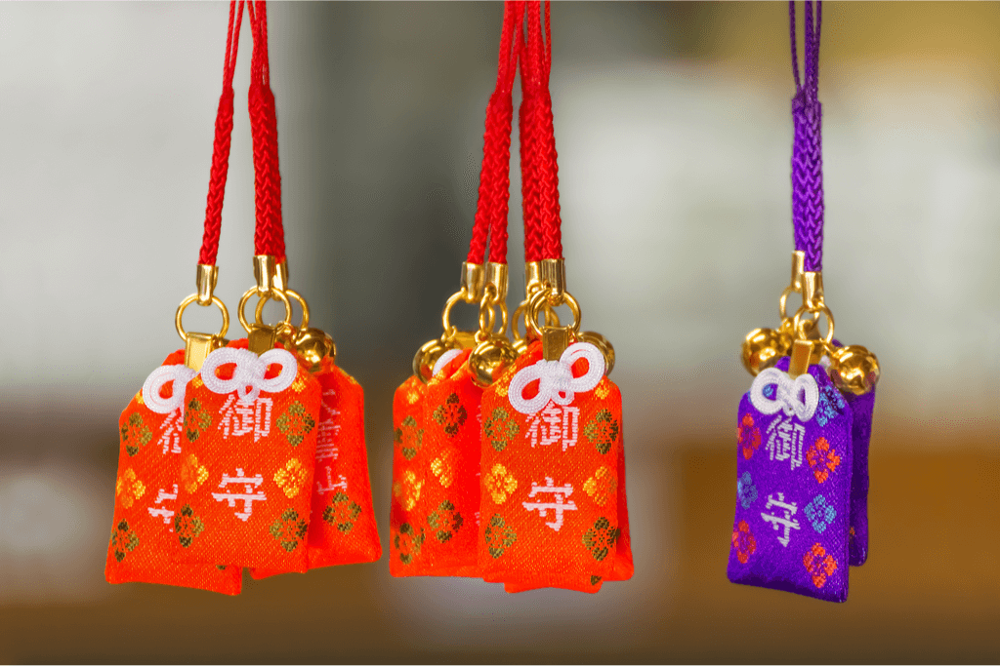

Charms (Luck/Protection)
Dive into the world of Japan's enchanting lucky charms, where symbols of fortune and protection reveal a culture rich in mysticism and belief.

Omamori
| Type | Meaning |
|---|---|
| Traditional Japanese Amulets | Holds significant cultural and spiritual importance which is often sold at Shinto shrines and Buddhist temples. Believed to bring various forms of good luck and protection. |

Maneki Neko
| Type | Meaning |
|---|---|
| Traditional Japanese Figurine | Believed to cultivate prosperity, especially in business. Typically displayed near the front of Japanese-owned businesses such as restaurants, shops, bars, hotels and many others to greet and attract customers. Common in colours of white, black, red and gold. |